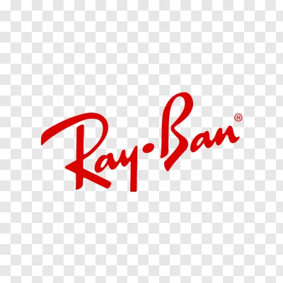

Ray-Ban optical frames
Prescription-ready Ray-Ban frames. Our optometrists test your eyes and fit lenses made for your prescription.
Enquire
Glasses & Sunglasses
Ray-Ban at Al Khaleej Opticals
Ray-Ban is one of the most recognised eyewear names in the world, known since 1937 for timeless shapes such as the Aviator, Wayfarer and Clubmaster. At Al Khaleej Opticals in Al Nakheel, Ras Al Khaimah, you can try Ray-Ban optical frames and sunglasses in person and have them fitted by our optometrists.
Whether you want everyday prescription glasses, a classic pair of sunglasses, or prescription sunglasses made to your exact power, our team will match the frame shape to your face and the lenses to your eyes.
Visit our Al Nakheel branches in Ras Al Khaimah, or book an eye test so we can recommend the right frame and lens for you.
Ray-Ban Collection
Browse the range in-store. Availability changes, so message us and we will confirm current styles.
Prescription-ready Ray-Ban frames. Our optometrists test your eyes and fit lenses made for your prescription.
EnquireUV-protective Ray-Ban sunglasses for driving, travel and everyday wear in the Ras Al Khaimah sun.
EnquireYour Ray-Ban sunglasses made with your own prescription, so you get clear vision and sun protection in one pair.
EnquireFind Your Shape
Try our free AI Frame Finder — it matches frame shapes to your face shape in seconds.
Trusted by families and professionals across Ras Al Khaimah since 2004.
Get your eyes tested, choose your frame and have it fitted in one place.
We work with ADNIC, NAS, Nextcare, Mednet, Orient and Saico Health.
Eye care and eyewear programmes for companies. Learn more.
Ray-Ban FAQs
Al Khaleej Opticals sells Ray-Ban eyewear at our Al Nakheel branches in Ras Al Khaimah. Call or WhatsApp +971 56 774 3136 to check current styles before you visit.
Yes. Our optometrists can test your eyes and fit Ray-Ban frames with single vision, progressive, blue-light or tinted lenses made to your prescription.
Cover depends on your individual insurance plan. We work with ADNIC, NAS, Nextcare, Mednet, Orient and Saico Health, so bring your card or call us and we will help you check your benefits.
Yes. Our Corporate Vision Care Programme supports companies across Ras Al Khaimah and the UAE with eye tests, prescription eyewear and bulk delivery. Visit our corporate page or message us on WhatsApp to start.